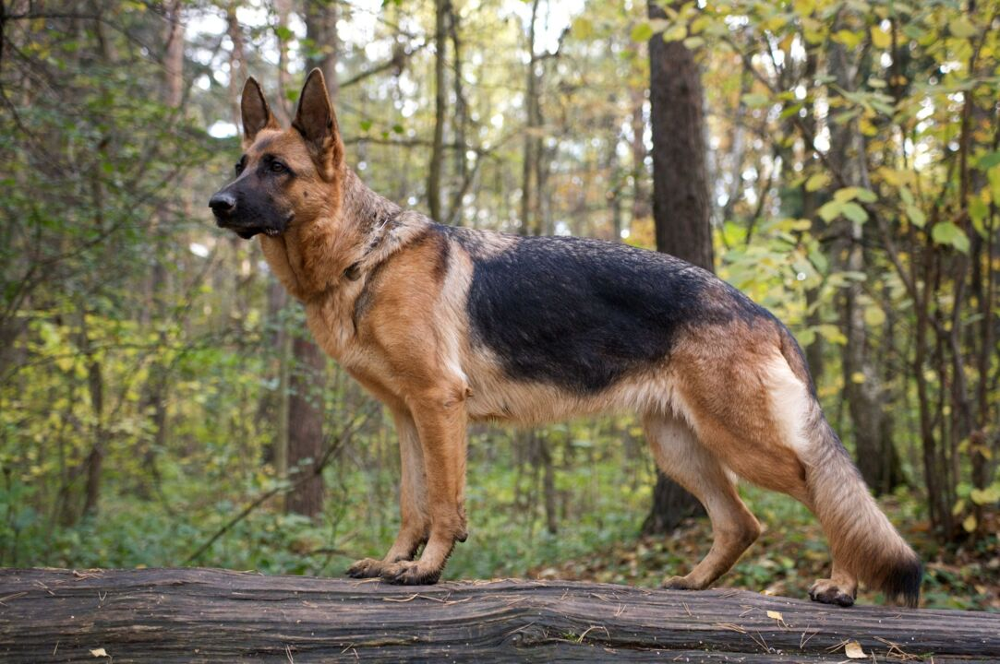
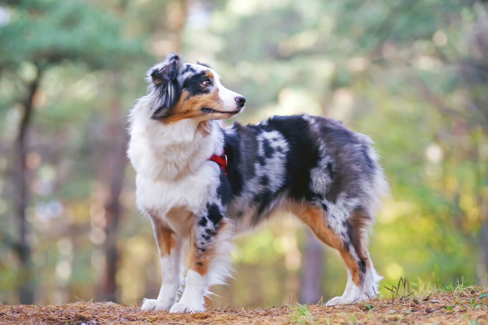
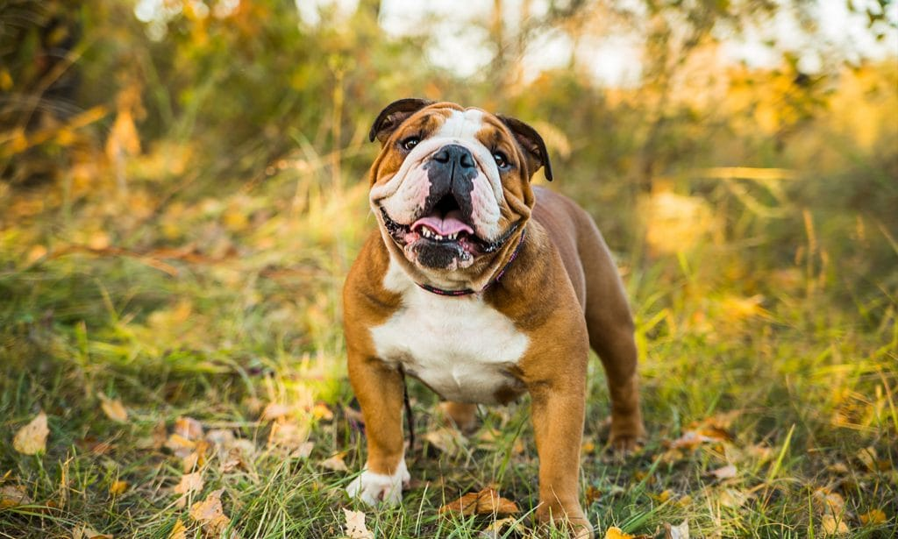
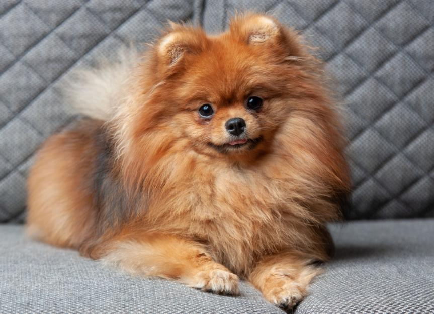
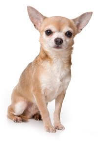
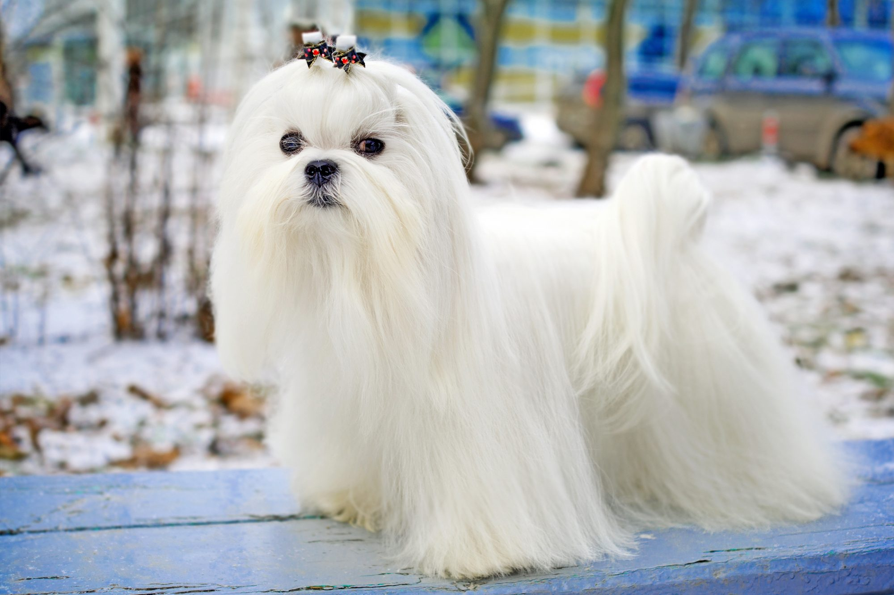
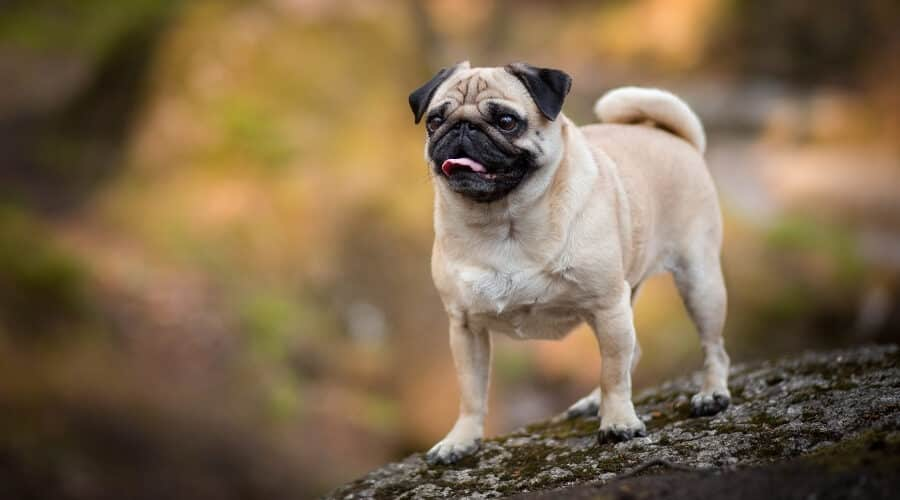
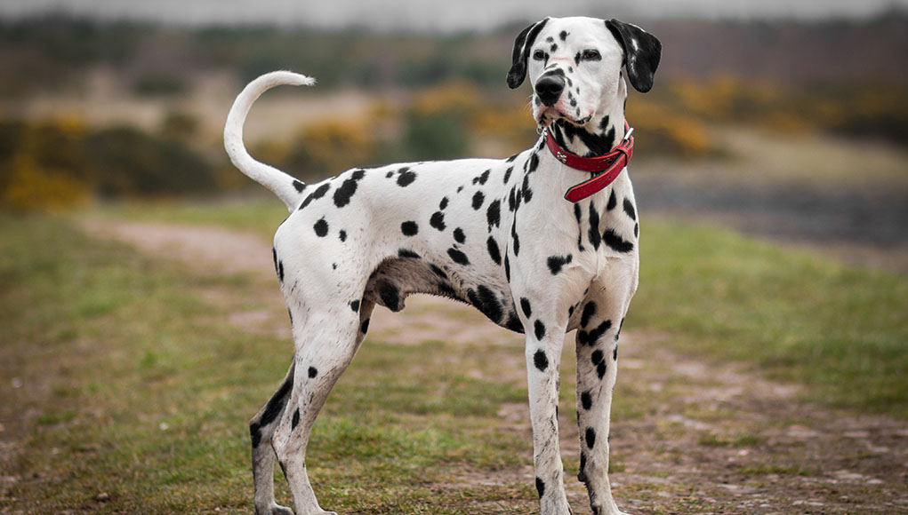

| Picture |
Dog Breed |
Information |
| Gilman, A. (2020, September 14). German Shepherd Dog Breed Information & Characteristics. Daily Paws. Retrieved November 17, 2022, from https://www.dailypaws.com/dogs-puppies/dog-breeds/german-shepherd |
German Shepherd |
Generally considered dogkind's finest all-purpose worker, the German Shepherd Dog is a large, agile, muscular dog of noble character and high intelligence. Loyal, confident, courageous, and steady, the German Shepherd is truly a dog lover's delight. German Shepherd Dogs can stand as high as 26 inches at the shoulder and, when viewed in outline, presents a picture of smooth, graceful curves rather than angles. |
| Gilman, A. (2020, August 24). Australian Shepherd (Aussie) Dog Breed Information & Characteristics. Daily Paws. Retrieved November 17, 2022, from https://www.dailypaws.com/dogs-puppies/dog-breeds/australian-shepherd |
Australian Shepherd |
The Australian Shepherd, the cowboy's herding dog of choice, is a medium-sized worker with a keen, penetrating gaze in the eye. Aussie coats offer different looks, including merle (a mottled pattern with contrasting shades of blue or red). |
| Bulldog Breed: Traits, Care, Health and History. (2022, July 14). BeChewy. Retrieved November 17, 2022, from https://be.chewy.com/dog-breed/bulldog/ |
Bulldog |
Kind but courageous, friendly but dignified, the Bulldog is a thick-set, low-slung, well-muscled bruiser whose 'sourmug' face is the universal symbol of courage and tenacity. You can't mistake a Bulldog for any other breed. The loose skin of the head, furrowed brow, pushed-in nose, small ears, undershot jaw with hanging chops on either side, and the distinctive rolling gait. |
 Poodle Dog Breed Information. (2022, November 2). American Kennel Club. Retrieved November 17, 2022, from https://www.akc.org/dog-breeds/poodle-standard/ Poodle Dog Breed Information. (2022, November 2). American Kennel Club. Retrieved November 17, 2022, from https://www.akc.org/dog-breeds/poodle-standard/ |
Poodle |
Poodles are eager, athletic, and wickedly smart dogs of remarkable versatility. The Standard, with his greater size and strength, is the best all-around athlete of the family, but all Poodles can be trained with great success. |
| Madden, A. (2022, June 22). Pomeranian. PetMD. Retrieved November 17, 2022, from https://www.petmd.com/dog/breeds/c_dg_pomeranian |
Pomeranian |
The tiny Pomeranian, long a favorite of royals and commoners alike, has been called the ideal companion. The glorious coat, smiling, foxy face, and vivacious personality have helped make the Pom one of the world's most popular toy breeds. |
 Learn About The Golden Retriever Dog Breed From A Trusted Veterinarian. (n.d.). Advanced Animal Care. Retrieved November 17, 2022, from https://www.advancedanimalcare.com/services/dogs/breeds/golden-retriever Learn About The Golden Retriever Dog Breed From A Trusted Veterinarian. (n.d.). Advanced Animal Care. Retrieved November 17, 2022, from https://www.advancedanimalcare.com/services/dogs/breeds/golden-retriever |
Golden Retriever |
The Golden Retriever, an exuberant Scottish gundog of great beauty, stands among America's most popular dog breeds. They are serious workers at hunting and field work, as guides for the blind, and in search-and-rescue, enjoy obedience and other competitive events, and have an endearing love of life when not at work. |
| Chihuahua Dog Breed Characteristics, Behavior & More | Pedigree® Philippines. (n.d.). pedigree ph. Retrieved November 17, 2022, from https://www.pedigree.com.ph/dog-breeds/chihuahua |
Chihuahua |
The Chihuahua is a tiny dog with a huge personality. A national symbol of Mexico, these alert and amusing "purse dogs" stand among the oldest breeds of the Americas, with a lineage going back to the ancient kingdoms of pre-Columbian times. |
| Silver, K. (2021, May 4). Maltese Dog Breed Information & Characteristics. Daily Paws. Retrieved November 17, 2022, from https://www.dailypaws.com/dogs-puppies/dog-breeds/maltese |
Maltese |
Maltese are affectionate toy dogs weighing less than seven pounds, covered by a long, straight, silky coat. Beneath the all-white mantle is a compact body moving with a smooth and effortless gait. |
| Braby, E. (2022, August 4). Pug Dog Breed Information: Facts, Traits, Pictures & More. LoveYourDog.com. Retrieved November 17, 2022, from https://www.loveyourdog.com/pug/ |
Pug |
They come in three colors: silver or apricot-fawn with a black face mask, or all black. The large round head, the big, sparkling eyes, and the wrinkled brow give Pugs a range of human-like expressions. |
| Matthews, T. (2022, June 15). Dalmatian Dog Breed Profile – Top Dog Tips. Top Dog Tips. Retrieved November 17, 2022, from https://topdogtips.com/dalmatian-dog-breed-profile/ |
Dalmatian |
he dignified Dalmatian, dogdom's citizen of the world, is famed for his spotted coat and unique job description. During their long history, these "coach dogs" have accompanied the horse-drawn rigs of nobles, gypsies, and firefighters. |